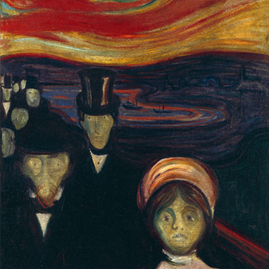
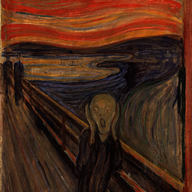

Ansiedad
Título original: Angst
Museo: Museo Munch, Oslo (Noruega)
Técnica: Óleo (94 x 74 cm.).

Friederich Nietzche
Museo: Thielska Galleriet, Estocolmo (Suecia)
Técnica: Óleo (201 x 160 cm.)

El grito
Título original: Skrik
Museo: Galería Nacional de Oslo, Oslo (Noruega)
Técnica: Óleo Pastel Temple (91 cm × 74 cm.)

Autorretrato en el infierno
Título original: Selvportrett i helvete
Museo:Museo Munch, Oslo (Noruega)
Técnica: Óleo (82 x 66 cm.)